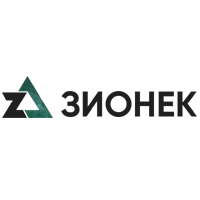
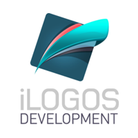
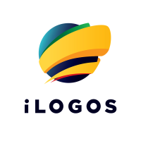
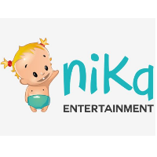
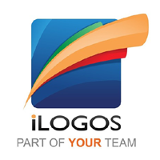

Главная
Обо мне
Программирование 1С
Администрирование
Тестирование
Разработки
Библиотека
Контакты
Сомов Евгений Павлович
Специалист в области автоматизации процессов ведения бухгалтерского учета и тестирования программного обеспечения
Опыт работы

Компания:
Zionec
Период работы:
4.03.2019 - настоящее время
Должность:
Automation QA Engineer.
Обязанности:
Разработка и сопровождение автоматизированного тестирования Web приложений.
Разразратка автотестов на Codeception (PHP), Selenium
Управление системой Jenkins для непрерывной работы автотестов.
Работа в репозитории GitLab
Работа в баг трекере Redmine
Ручное тестирование Web приложения разработанных на 1С Битрикс
Компания:
iLogos
(Europe)
Период работы:
23.01.2017 - 07.03.2019
Должность:
Automation QA Engineer.
Обязанности:
Планирование задач тестирования на Sprint
Распределение задач между тестировщиками в рамках проекта
Ведение документации по проекту в Confluence (Jira)
Отчетности по багам на каждый Sprint
Прямое взаимодействие с данными в базе данных проекта
Разработка "админки" для проекта на языке PHP под MySQL (фреймворк Yii2)
Отладка и сборка билдов в среде разработки Unity
Разработка C# скриптов автоматического тестирования в среде Unity.
Разработка unit-тестов для тестирования сервера (XUnit) и клиента (NUnit)
Автоматизированное тестирование средствами AndroidSDK
Ручное тестирование мобильных Android и iOS приложения
Ручное тестирование Desktop приложения для Steam
Работа в баг трекере Jira (конструирование запросов для вывода отчетов)

Компания:
iLogos
Период работы:
1.04.2016 - 23.01.2017
Должность:
Developer.
Обязанности:
Портирование Flash игр на HTML5 с применением движка Phaser
Портирование логики с PHP на NodeJS
Работа с сервером Redis
Сборка проекта с использованием Grunt
Язык программирования: TypeScript / JavaScript

Компания:
iLogos
Период работы:
1.04.2015 - 1.04.2016
Должность:
QA Engineer.
Обязанности:
Тестирование мобильных Android и iOS приложения
Использование снифферов: Charles, Fiddler2
Автоматизированное тестирование средствами AndroidSDK, HiroMacro
Написание скриптов на языке Python
Проведение взлом тестов средствами: Cheat Engine, Freedom, GameCIH
Создание чек-листов и тест-кейсов
Анализ процессов и потоков при тестировании с помощью DDMS
Отладка Web content средством Remote Debugging on Android with Chrome
Работа в баг трекере Jira

Компания:
Nika Entertainment
Период работы:
1.10.2013 - 1.04.2015
Должность:
QA Mobile.
Обязанности:
Тестирование мобильных и социальных приложений
Создание чек-листов и тест-кейсов
Использование снифферов: Charles, Fiddler2
Профилирование Flash приложений средством Adobe Scout CC
Автоматизированное тестирование Flash приложений с помощью Genie
Работа в баг трекере Redmine

Компания:
iLogos
Период работы:
15.04.2013 - 1.10.2013
Должность:
QA.
Обязанности:
Ручное тестирование
Тестирование мобильных и социальных приложений
Создание чек-листов и тест-кейсов
Работа в баг трекере Redmine
Компания:
Восточная торговая компания
Период работы:
2012 - 2013
Должность:
System Administration.
Обязанности:
Поддержка сервера Microsoft Server 2008 и SQL Server 2000
Поддержка в 1С Предприятие 7.7
Настройка аппаратного и программного обеспечения для стабильной работы
Конфигурирование серверов, отказоустойчивых решений, инфраструктурных элементов
Установка/инсталляция серверов/сервисов, модернизация существующих
Обслуживание офисной компьютерной техники
Тестирование аппаратного обеспечения
Настройка рабочих станций, сетей и сетевого оборудования (роутеры, модемы)
Информационная безопасность
Организация резервного копирования
Организация удаленного доступа
Поддержка пользователей
Проведение закупок нового аппаратного и программного обеспечения